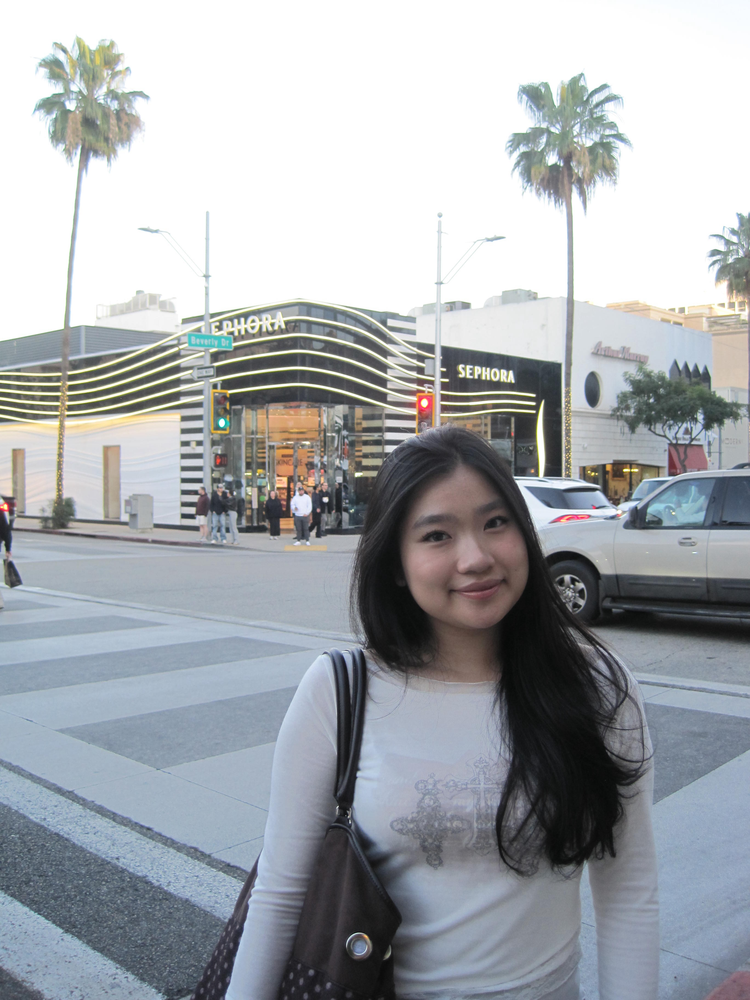

Finance Student · Rutgers Business School
Turning data into decisions — one spreadsheet at a time.

I'm a Finance student at Rutgers Business School (GPA 3.5) with a passion for financial analysis, data-driven decision-making, and community leadership. I enjoy digging into numbers to uncover the story behind them — whether it's optimizing costs, building financial reports, or managing organizational budgets.
When I'm not in spreadsheets, you'll find me on the pickleball court, experimenting in the kitchen, or capturing moments through photography.
I'm open to internships, opportunities, and conversations about finance & business.